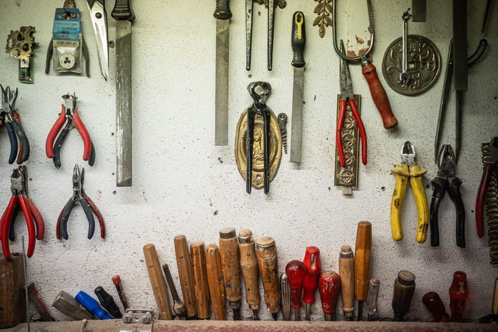

Silhouettes
The Shape That Tells on You

The bench is six square metres, and from the doorway I can see all of it. That distance is the whole argument. Standing at the door with a coffee going cold, I am roughly three metres from the wall board, which is close enough to read shapes and far too far to read words. For years the board carried a strip of tape under every hook with a name written on it in marker. The names were accurate. They were also useless from the door, and I did not understand what I was losing until I painted over them.
A label answers a question you have already asked
Think about when a text label actually does its job. You walk to the board, you stand in front of it, you look at a hook, and the label under the hook tells you what belongs there. That is a confirmation. It resolves a question you formed by being present. It is genuinely useful for someone new to the room, or for the moment you are holding an unfamiliar thing and want to know where it lives.
But it is a terrible reporter. A label under an empty hook says the same thing it said yesterday: a name. The hook says nothing. You have to notice the emptiness on your own, and empty space is very easy not to notice, especially against a busy wall. Naming a gap is not the same as showing one.
An outline flips the direction of the information. It does not wait to be asked. A painted silhouette with nothing in it is a bright, wrong-looking hole in a pattern — and pattern breaks are one of the few things human eyes catch reliably from a distance, in poor light, mid-conversation, while carrying something in both hands. The board becomes a passive alarm. Nobody has to run it. It runs whenever anyone looks at the wall.
A label tells you what should be there. An outline tells you that it isn't — and it tells you before you have decided to care.
The afternoon I repainted one board
I did the short wall first, on a Tuesday, because it was the wall I stared at most and the one I trusted least. Twenty-odd positions. I took everything down, laid a sheet of hardboard on the bench, and traced each tool where it hung — flat on the board, in the same orientation it would return in, pencil held vertical so the line did not creep outward. Then I filled the shapes with a light paint over a dark board and let it dry while I did something else.
By late afternoon the tools were back and I was doing an unrelated job at the other end of the bench. I turned around for something and stopped. Two shapes were bare. Not "I checked and found two missing" — I saw them the way you see a burnt-out bulb in a row. One was a small pair of pliers I had carried to the shed and left on a windowsill. The other was a driver that had gone into a jacket pocket, which is where things go to disappear. Both came back in under five minutes.
Here is the part worth sitting with: under the old labelled system, I would have found those two at the next proper stocktake, which in practice meant the following week, and probably by needing them and failing to find them. The board did not make me more organised that afternoon. It made the shortage visible while it was still trivial to fix. That is the difference between an inventory system and an inventory record, and I wrote more about the slow version of that gap in why the drawer hides losses.
Shape fidelity: trace it, don't draw it
An outline works because it is specific. The moment it stops being specific, it stops reporting anything. A generic rounded blob that vaguely suggests "some kind of plier" is a decoration, not a signal — because three different tools fit it, and a filled outline no longer proves the right tool came home.
This is the failure mode I see most often on other people's walls, and I have made it myself. It happens when someone draws freehand to save time, or rounds the outline outward to make hanging easier, or paints a shape big enough to accept a whole family of similar tools so the board is "flexible". Flexible is exactly wrong here. The board's only job is to be intolerant. A shape that accepts anything reports nothing.
- Trace the actual tool, in its hanging orientation, with the pencil upright. Tilting the pencil grows the shape by a few millimetres on every edge, and those millimetres are the tolerance you are trying to remove.
- Include the asymmetries. A cranked handle, an offset head, a notch — those details are what make one outline refuse a lookalike.
- Do not smooth the line. The temptation to tidy a wobbly trace into a clean geometric shape is the same temptation as approximating, wearing a nicer coat.
- Leave the hook hole exactly where the tool wants it, not where the grid is convenient. A tool that has to be forced onto a hook gets put on the bench instead.
- Fill, don't hollow, when you can. A solid silhouette reads as a mass at distance; a thin outline can disappear into board grain and shadow.
Contrast is the range setting
How far away the board can report from is decided almost entirely by the difference between the paint and the board behind it. That is the dial. Everything else — shape quality, layout, hook type — matters up close; contrast is what buys you the doorway.
| Board surface | Silhouette choice that tends to read well | What tends to go wrong |
|---|---|---|
| Dark painted board (charcoal, deep grey) | Light, slightly warm fill — off-white or pale ochre | Pure white can glare under a single overhead lamp and wash out edges |
| Bare plywood or OSB | Any dark, flat fill; the grain fights mid-tones | Mid greys and browns sink into the grain and lose the shape at distance |
| Perforated hardboard, factory brown | Dark board paint first, then a light silhouette on top | Painting silhouettes straight onto brown gives weak separation and the holes add visual noise |
| White or pale wall | Dark fill, and a thin border to stop shadow confusion | Tool shadows read like more silhouettes, so gaps stop looking like gaps |
| Metal panel | Matte anything — kill the reflection first | Gloss on gloss means the shape only exists from one standing position |
Test it the way you will actually use it: stand where you normally stand, at the door or at the far end of the bench, with the lighting you normally have on. If you have to walk closer to tell whether a shape is filled, the contrast is not doing its job yet, and no amount of tracing accuracy will fix that. Some people find a single low-angle lamp makes silhouettes read better than a bright ceiling light, because raking light gives the tool an edge that the flat paint does not have.
An outline is a message left for the next person
The board is not really talking to you. It is a note from whoever last put a tool back to whoever needs it next — and often those are the same person separated by a week, which is close enough to two different people. When someone hangs a tool on its own shape, they are saying: this is where it is, you do not have to search, stop looking. When they leave the shape bare, they are saying: I have it, or I lost it, and either way do not waste ten minutes opening drawers.
That is the quiet social function of a silhouette wall, and it is why shared benches feel different under one. Nobody has to ask anybody anything. Nobody has to be accused of anything either — the wall reports a state, not a culprit. If you want the daily version of the same conversation, the routine I keep is described in the end-of-day count habit, and the trade-offs between the two methods get argued out properly in the piece on painted outlines versus labels.
A note on what this is
This is one small workshop's practice, written down. Boards, lighting, and tool mixes differ; what reads clearly on my short wall may not read on yours, and the only reliable test is the one you run standing in your own doorway. Nothing here is a rule, and nothing here needs to be bought — a pencil, a tin of leftover paint, and an afternoon covered everything described above.
Read also
- Painted Outlines Versus Labels — the same argument, run the other direction.
- What a Missing Outline Actually Costs — the minutes that hide inside a bare hook.
- Six Square Metres and a Count — how the whole bench got arranged in the first place.